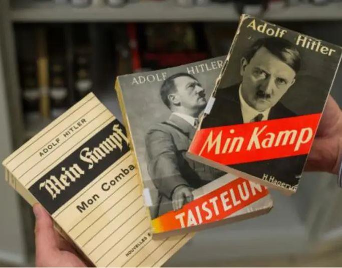
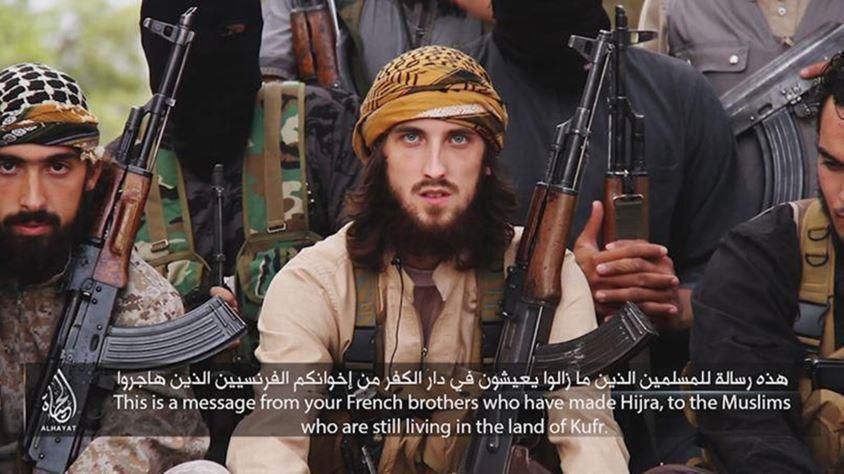
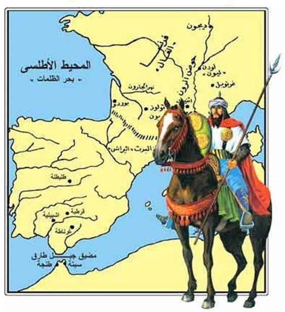

L’Europe se libérait du joug nazi voici 75 ans. Le temps d’une vie humaine s’est écoulée depuis le 8 mai 1945, celle de la génération « Baby-boom » qui doucement s’éteint sans n’avoir connu ni la guerre, ni la famine, ni les pandémies meurtrières. La nature politique de l’homme ayant horreur du vide, un totalitarisme en aura immédiatement chassé un autre. Le communisme s’est emparé de l’Est, le progressisme s’est répandu à l’Ouest. Oh, bien entendu, ces deux totalitarismes ne revêtent ni la même forme, ni ne provoquent les mêmes drames. Le communisme aura engendré, sur un fond idéologique vertueux, au moins 60 millions de morts et soumis bien plus d’âmes à son diktat. Le progressisme ne tue pas directement. C’est une autre forme de totalitarisme de la pensée, bien plus pernicieuse en ce qu’il est difficilement détectable, condamnable, affrontable mais sa finalité est la même : manipuler à des fins politiques et contrôler les corps et les esprits. Le communisme est mort, même en chine qui en revêt les oripeaux, avec la chute du mur de Berlin.
Le progressisme a encore de beaux jours devant lui et semble préparer le terrain d’une idéologie par nature totalitaire, dont l’efficace discrétion des débuts fait place à la revendication : l’islam, présentée comme une « religion de paix et d’amour », même après chaque attentat sanglant perpétré en son nom. Le ministre français de l’intérieur, Christophe Castaner, aveuglé par ce besoin viscéral d’appartenir au camp du bien, déclarait le 23 novembre 2017 sur RMC que l’islam est une « religion de bonheur et d’amour »1, allant jusqu’à admettre devant le Sénat que « personne ne fait de lien entre la religion musulmane et le terrorisme »2.
Cette erreur d’appréciation, partagée par de nombreux Français malgré les milliers de morts que provoquent chaque année l’islam à travers le monde3, relève de la même crédulité apathique que celle des Français dans les années 1930 qui ne voyaient pas en Hitler un danger pour la France et n’avaient pas lu le très explicite Mein Kampf, véritable programme du dictateur qui y expose sa conception du monde avec ses composantes hégémoniques et belliqueuses.
Pourtant très largement diffusé en Allemagne4, il n’a que très peu été lu en en France. La traduction et la publication de Mein Kampf en France relevait d’une démarche patriotique, et la dimension antifrançaise de ce livre n’est connue à l’époque de quelques-uns, rappelle l’historien Emmanuel Debono5. L’ouvrage regorge en effet d’imprécations et d’attaques contre la France, « ennemi impitoyable du peuple allemand », décrite comme un « État mulâtre » en pleine dégénérescence raciale et dont les « principes égalitaires » sont vivement critiqués. La haine de la France et des Juifs était clairement exprimée dans Mein Kampf. La haine des infidèles et la volonté de domination totale du monde sont clairement exprimées dans le Coran, pourtant considéré comme le livre de la religion « de paix et d’amour » par nos élites dirigeantes. Le projet qu’Adolf Hitler mettra à exécution quelques années plus tard, faute de réaction adaptée et anticipée de la part des nations européennes, était presqu’intégralement couché dans les pages de ce livre que le caporal revanchard avait rédigé en prison après sa tentative avortée du putsch de Munich. Ceci nous donne l’occasion d’établir une seconde similitude entre islamisme et nazisme : la tentative de domination par la force ayant échoué, les nazis passeront par les urnes. Pareillement, l’islam qui a échoué à dominer le monde par la force, s’emploie à user de la ruse, de la politique, du pouvoir de l’argent et de sa puissance démographique pour conquérir de nouveaux territoires sur le temps long.
La haine de la France et des Juifs était clairement exprimée dans Mein Kampf. La haine des infidèles et la volonté de domination totale du monde sont clairement exprimées dans le Coran
Cependant, le nazisme est une idéologie qui n’a pas survécu à son créateur. L’islamisme, qui est davantage une idéologie politique qu’une religion, a non seulement survécu à son prophète Mahomet, mais s’est depuis largement répandue depuis sa création au VIIe siècle. Les horreurs perpétrées au nom de l’islam en Occident depuis plusieurs décennies attestent que ses guerriers sont déjà dans une démarche de conquête alors que des millions de musulmans vivent désormais dans la vieille Europe. En cela, l’islamisme est plus à craindre que le nazisme puisqu’aucun changement de régime ne saurait étouffer ses velléités séculaires : dominer l’humanité.
En Islam, le monde se divise en deux catégories : le territoire musulman, dit Dâr-al-islam (territoire conquis) et les territoires non-musulmans, dans lesquelles sont menées des actions de conquête lorsque l’occasion se présente, dites Dâr-al-harb (territoire de la guerre). Dans cette vision binaire, l’objectif ultime de tout « bon musulman », c’est-à-dire de croyant qui s’applique à respecter les commandements du Coran auquel il doit se soumettre, est de participer, plus ou moins activement, plus ou moins pacifiquement, au Djihad, cette « lutte », cet « effort » pour propager et défendre l’Islam à travers le Monde par l’application de la Charia, la loi islamique.
Si ces notions de Djihad et de Charia n’ont pas d’origine explicite dans les textes classiques de l’Islam, l’historien britannique Bernard Lewis6 explique qu’elles tirent leur légitimité en ce qu’elles viennent tout simplement de Dieu en tant qu’elles sont les expressions extérieures et immuables des commandements de Dieu à l’humanité. C’est sur l’un de ces commandements que se fonde la notion de guerre sainte, de Charia. Il ajoute que « L’obligation du djihad se fonde sur l’universalité de la révélation musulmane. La parole de Dieu et le message de Dieu s’adressent à l’humanité ; c’est le devoir de ceux qui les ont acceptés de peiner (djâhada) sans relâche pour convertir ou, tout au moins, pour soumettre ceux qui ne l’ont pas fait.
Cette obligation n’a de limite ni dans le temps, ni dans l’espace. Elle doit durer jusqu’à ce que le monde entier ait rallié la foi musulmane ou se soit soumis à l’autorité de l’État islamique ». Dans ce Djihad, la première étape consiste à réformer les pays musulmans qui ont fait des compromis avec l'Occident et à transformer les pays musulmans en États islamiques régis par la charia. Ce processus a déjà commencé dans plusieurs pays, dont le système juridique s’inspire plus ou moins fortement de la loi islamique : l’Arabie saoudite, le Koweït, le Bahreïn, les Émirats arabes unis, le Qatar, Oman, le Yémen, l’Iran, le Pakistan, l’Afghanistan, la Libye, la Malaisie, Brunei et l'Indonésie ou quelques régions de la Somalie ou du Nigéria. Ensuite, il convient d’islamiser les chrétiens et les autres minorités religieuses7 vivant dans les pays musulmans, ce qui se produit partout où les guerriers de l’islam, appelés musulmans « extrémistes », « fondamentalistes » ou encore « radicaux » sont présents, comme au Pakistan, au Bangladesh, en Égypte, en Irak. Vient enfin la conquête de l’Occident, et en particulier de l'Europe, qui se fait lentement par l’endoctrinement de jeunes musulmans, immigrés ou nés en Europe, par le biais d'imams enseignant des idéologies radicales dans les mosquées, les prisons ou les librairies.
Dans la main de ses guerriers, l’Islam s’épanouit en système de domination, d’oppression et de répression comme l’était le nazisme. Comme le nazisme qui tenta de s’imposer par la force avant d’employer des moyens plus discrets en s’adaptant à un contexte politique et culturel, l’islam a d’abord tenté, à de multiples reprises, de s’imposer par la force en conquérant de nouveaux territoires. La guerre sainte de l’islam commença quelques années à peine après la mort de son prophète Mahomet en Arabie en 632 ap. JC.
Les armées musulmanes de la dynastie Omeyyade8 avaient établi un empire islamique qui s'étendait sur l’ensemble de la péninsule arabique et le sud du bassin méditerranéen de 661 à 750, s’emparant également de l’Afrique du Nord et de l’Espagne. Cette première incursion militaire de l’Islam en Occident a finalement été repoussées en 732 à Poitiers lorsque Charles Martel et l'armée celtique des Francs ont tué Abd-er Rahman. Il a ensuite fallu attendre 1492 pour que l’Islam boute l’islam hors d’Europe.
La deuxième vague de conquête islamique a atteint son apogée vers la fin du XVIe siècle. Après la conquête de Constantinople en 1453, l’empire Ottoman, a établi un système juridique basé sur la charia. Sous Suleiman le Grand (1520-66), l'Empire ottoman s’étendait du Yémen, en passant par la Syrie, l'Irak, l'Anatolie, le Kurdistan, l'Azerbaïdjan, la Géorgie, les Balkans et la Crimée jusqu'en Hongrie et à l'ouest le long de la côte nord-africaine de l'Égypte à Algérie. A cette époque, l'Occident chrétien était en danger perpétuel et imminent de conquête militaire au nom de l’Islam. Après plusieurs tentatives d’incursion militaire en Europe, l’empire Ottoman a finalement décliné et fut aboli en 1922. Il ne faudra attendre que quelques années pour voir émerger une nouvelle forme de velléité dominatrice de l’islam. En 1928, suite à la chute de l’empire ottoman, Hassan el-Banna fonde en Egypte l’association islamiste des Frères musulmans, nourrie de haine occidentale et de détestation de la laïcité des occidentaux, contraires aux préceptes de l’islam. Une nouvelle forme de conquête est née. Elle sera culturelle, politique, mais par-dessus tout démographique. L’ancien président algérien Houari Boumediene a ainsi déclaré en avril 1974 à la tribune de l’ONU cette phrase en rien prophétique, mais absolument programmatique : « Un jour, des millions d'hommes quitteront l'hémisphère sud pour aller dans l'hémisphère nord. Et ils n'iront pas là-bas en tant qu'amis. Parce qu'ils iront là-bas pour le conquérir. Et ils le conquerront avec leurs fils. Le ventre de nos femmes nous donnera la victoire. »
Sans tarder, les gouvernements européens doivent prendre des dispositions pour renverser la progression de l’islam
L’Europe observe avec beaucoup de légèreté la progression de l’islam sur son propre sol, avec cette même légèreté qui caractérisait les futurs alliés contre la montée du régime nazi dans les années 1930 et jusqu’à la veille de la guerre. Cet aveuglement mêlé de crédulité est un poison pour les peuples, un poison pour la paix. Sans tarder, les gouvernements européens doivent prendre des dispositions pour renverser la progression de l’islam. Elles devront être de plus en plus fermes et radicales à mesure que le danger grandit. Le temps presse. La première de toutes les mesures serait de se libérer de la dépendance énergétique de l’OPEP, en particulier des puissances musulmanes du golfe qui jouent de leur avantage géopolitique pour financer l’islam en Europe, particulièrement en France9, et empêcher les pays énergétiquement dépendants d’agir contre la diffusion de l’islam à l’intérieur de leurs frontières. Par ailleurs, la construction européenne devra être réformée, libérée du joug technocratique et hors-sol de Bruxelles. Mais par-dessus tout, il s’agira de combler le vide identitaire européen, provoqué par la mondialisation uniformisante, qui a amputé nos modes de vies et nos territoires de leur coutumes, traditions et caractères et dans lequel l’Islam s’engouffre. L’Islam, qui est un puissant conservatisme (exogène), comble en effet ce vide identitaire dont les individus ont besoin, flatte l’instinct grégaire de l’homme en lui offrant d’appartenir à une communauté de croyants transnationale, la oumma, un but à atteindre qui transcende la temporalité d’une vie d’homme (la conquête du monde), un cadre strict, des traditions fortes. L’islam achève un système que nous, occidentaux, laissons périr. Ravivons notre instinct conservateur, redonnons vie à nos coutumes, nos traditions occidentales : elles ont un solide rempart à la pénétration musulmane sur nos territoires !
Il faut combler le vide identitaire européen, provoqué par la mondialisation uniformisante, dans lequel l’Islam s’engouffre
Si nous ne parvenons pas à freiner l’immigration massive et l’islamisation de la France, elle sera majoritairement musulmane avant la fin de ce siècle. Si aucune mesure de précaution n’est prise dans les prochaines années, nous n’aurons d’autres choix que de mettre en œuvre des politiques de défense plus radicales pour tenter de sauvegarder ce qu’il restera de notre peuple. « La complaisance pour l'adversaire est le signe distinctif de la débilité, c'est-à-dire de la tolérance, laquelle n'est en dernier ressort qu'une coquetterie d'agonisant », écrivait Emil Michel Cioran. Les puissances occidentales confrontées à la menace islamique, ainsi que l’est la France, devront choisir entre soumettre ou être soumis. Il est encore temps de décider de soumettre l’islam à nos lois en refusant tout signe visible de sa présence dans l’espace public, supprimant toute subvention aux associations « cultuelles » ou « culturelles » qui promeuvent l’expansion de l’islam, en ne donnant aucun écho aux revendications panislamiste dans les médias.
L’islam doit se soumettre aux lois françaises, ce qui est éminemment incompatible avec sa nature et sa vocation. Dans le cas contraire, c’est l’islam qui soumettra la charia aux Français.
4. L’ouvrage, qui était offert aux jeunes mariés allemands, totalisait un tirage d’environ dix millions d’exemplaires en 1945 (https://www.livreshebdo.fr/article/que-faut-il-faire-de-mein-kampf)
Partager cette page